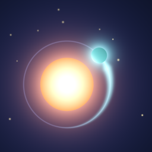

Sungrazer — mise à jour le 12 novembre 2026
Sungrazer ne collecte rien. Pas de compte, pas de publicité, pas de mesure d'audience, pas de pistage, et aucun code réseau qui lui soit propre. Ta progression reste sur ton appareil.
Rien. Sungrazer ne collecte, n'enregistre sur aucun serveur, ne transmet et ne vend aucune donnée personnelle. Pas d'inscription, pas d'identifiant utilisateur qui lui soit propre, pas d'identifiant publicitaire, et aucun rapport de plantage ou d'usage de son fait. Si tu as choisi dans iOS de partager tes analyses avec les développeurs, Apple peut fournir des rapports de plantage et des statistiques d'usage anonymes, selon sa propre politique.
Tes scores, ton niveau, tes missions, tes médailles, tes succès, ta série de défis du jour, ta planète, les astuces déjà vues et tes réglages sont enregistrés sur ton appareil, dans le stockage de l'app. Si tu utilises Game Center, l'app y garde aussi l'identifiant de joueur Game Center auquel tes records et tes succès appartiennent. Supprimer l'app efface tout. Si tu es connecté à Game Center, tes scores et tes succès y sont aussi envoyés (voir ci-dessous), et ton record autour du Soleil en revient quand tu te reconnectes.
Le rappel du défi du jour est désactivé tant que tu ne l'actives pas. C'est une notification qu'iOS prépare sur ton appareil : rien n'est envoyé, ni à nous ni à personne, et tu peux le couper dans les options du jeu ou dans Réglages › Notifications.
Si tu es connecté à Game Center, le score de chaque partie est envoyé aux classements Game Center d'Apple (celui de son système stellaire, ou celui du défi du jour pour une partie du défi), ainsi que ton record dans chaque système, et les succès que tu obtiens sont envoyés aux succès Game Center. L'écran de classement affiche le pseudo Game Center des joueurs classés. C'est Apple qui s'en occupe, selon sa politique de confidentialité ; nous n'en recevons aucune donnée. Game Center est facultatif : tu peux jouer sans te connecter, et le gérer dans Réglages › Game Center.
Sungrazer ne contient aucun SDK tiers, aucune régie publicitaire et aucun service de mesure d'audience. Aucune donnée n'est partagée, puisqu'aucune n'est recueillie.
Sungrazer convient à tous les âges et ne collecte de données auprès de personne, enfants compris.
Le RGPD te donne un droit d'accès, de rectification et d'effacement sur tes données personnelles. Nous n'en détenons aucune : il n'y a donc rien à consulter, corriger ou effacer. Si tu écris à l'adresse ci-dessous, ton message n'est conservé que le temps de te répondre.
Si cette politique change, la nouvelle version sera publiée sur cette page avec sa date. Si une future version de Sungrazer devait collecter quoi que ce soit, ce serait écrit ici clairement, et avant.
Mourad Toumi — mouradski@icloud.com